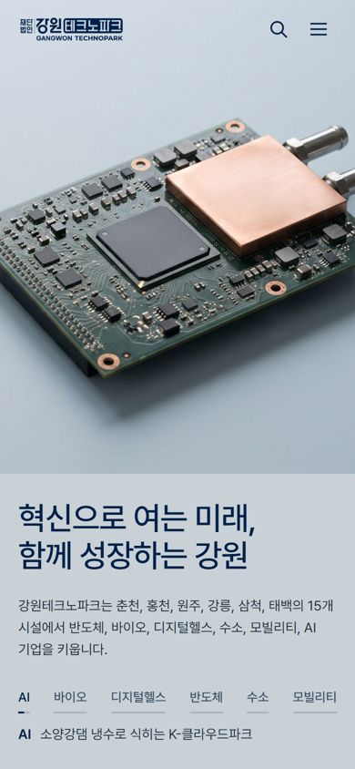
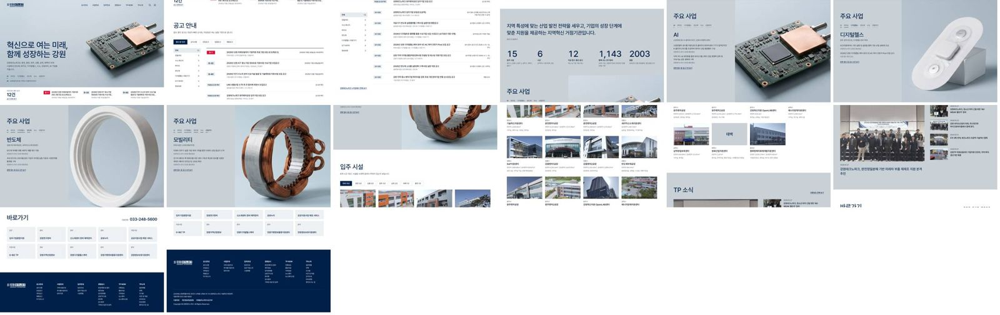

① 고퀄리티 한국식
혁신으로 여는 미래, 함께 성장하는 강원
메인 페이지 열어 보기

섹션 순서 (DNA D2 뼈대)
- 혁신으로 여는 미래, 함께 성장하는 강원1단계 첫 화면 그대로 — 직접 만든 사물 사진 6장이 6초씩 넘어가고 사업 이름 막대가 차오름, 맨 아래 흰 공고 띠(접수 중 건수와 3건)C1, C2, C3, C4, C5, B3, B4, E3
- 공고 안내접수 중 공고 12건 전부(마감 빠른 순, D-day·부서·분야·마감일) + 분야 거르기(전 분야 공고는 모든 분야에 포함) + 공지사항·모집공고·입찰공고·채용공고 탭(누리집 실제 목록 5건씩), 폰은 6건 뒤 '더 보기'D2, A1, A3, B2, D4
- 선언 한 문장 + 숫자원장 인사말의 '지역혁신 거점기관' 문장 + 입주 시설 15곳, 6개 시군, 접수 중 공고(자동 계산), 함께 쓰는 연구장비 1,143점(29개 기관, 2026년 10월 28일), 2003년 설립을 남색 큰 숫자로D2, B2
- 주요 사업화면에 붙잡아 둔 무대(약 4.7화면 길이)에서 스크롤로 AI, 바이오, 디지털헬스, 반도체, 수소, 모빌리티가 차례로 — 오른쪽은 첫 화면의 같은 사물 사진, 왼쪽은 분야 이름·어디서·근거 사업 두 줄(2026 홍보영상 자막 원문)·관련 접수 중 공고 수(누르면 공고 목록이 그 분야로 걸러짐), 진행 막대는 첫 화면 사업 이름 막대와 같은 모양D2, D3, E7
- 입주 시설6개 시군 15곳 — 시군 탭, 새벽 종이 색으로 보정한 실제 사진, 이름·면적·용도, 누르면 주소·규모·편의시설과 층마다 쓰임(층별 구성) 창. 태백 원료산업지원센터는 받은 사진이 없어 지어내지 않고 지명 면으로D2, A4, D4
- TP 소식대표 1건(큰 사진, 은은한 시차) + 나머지 4건 목록, 언론보도 전체 보기D2, A4, E7
- 바로가기관련 시스템 10곳(입주·장비·지원사업·정보·분야) + 대표전화 033-248-5600D2, D4
- 바닥글남색 면 — 로고, 실제 메뉴 사이트맵(6개 대메뉴·하위 메뉴), 주소·대표전화·약관 링크·저작권D2
입힌 움직임
- E3첫 화면 한 줄 두 줄이 아래 40px에서 1.2초 동안 올라옴(1단계 그대로)
- C5첫 화면 사물 사진 6초 넘김 + 사업 이름 막대가 시간으로 차오름
- E6첫 화면 위에선 투명 머리글, 내려가면 숨고(160px 이후) 올라오면 흰 바탕으로 다시 나옴
- D5대메뉴에 마우스를 올리면 화면 폭 흰 판에 2단계 메뉴 30개가 6열로 0.25초에 내려옴, 폰·데스크톱 보기는 전체메뉴 버튼으로 2열 판
- D3주요 사업 무대를 화면에 붙잡아 두고 스크롤 진행률로 장면 6개 전환, 진행 막대는 스크롤만큼 차오름, 단계 이름을 누르면 그 장면으로 이동
- E2장면 글자는 진행률에 묶지 않고 기준점을 넘을 때 0.7초 cubic-bezier(.16,1,.3,1)로 올라오고, 사진은 0.8초 교차 — 멈춰도 반쯤 잘린 글자가 남지 않음
- E7TP 소식 대표 사진만 스크롤보다 조금 느리게 움직이는 시차(±6%)
- E5탭·공고 줄·시설 카드·바로가기 반응 0.25~0.35초(시설 사진 3% 확대)
- E1안 따름 — 관성 스크롤을 직접 짜면 키보드·터치·스크롤바 이동이 어긋나기 쉬워 기본 스크롤 유지
- E8안 씀 — 바로가기 10곳은 흐르는 띠보다 한눈에 보이는 5칸 격자가 찾기 쉬워서
사진 보정받은 시설 사진 15장과 소식 사진 5장을 PIL로 같은 보정(채도 72%, 빨강 조금 빼고 파랑 조금 더해 차갑게, 검정을 살짝 들어 새벽 종이 색감에 맞춤)·16:10과 3:2로 잘라 미리 구움
못 한 것
- 태백 원료산업지원센터는 받은 사진이 없어 사진 칸을 지명 면으로 둠
- 소식 5건은 개별 기사 주소가 자료에 없어 모두 언론보도 목록으로 연결